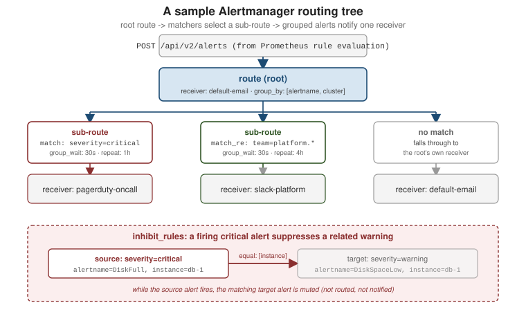

Alertmanager
|
This content was generated with the assistance of AI and should be verified against the official documentation before being relied on in production. |
Prometheus’s rule evaluation only decides that something is wrong and appends the result to
ALERTS, as covered in
Recording & Alerting Rules; it is
Alertmanager that turns a stream of firing alerts into an actual notification. Alertmanager is a
separate binary that Prometheus pushes alerts to over HTTP: it deduplicates alerts arriving from
multiple Prometheus servers, groups related ones into a single notification, throttles repeats,
silences or inhibits what should not page anyone right now, and finally dispatches to a receiver — email, Slack, PagerDuty, an arbitrary webhook. This page covers the routing tree, grouping and
throttling, receivers and templates, inhibition, silences, and running Alertmanager as a
highly-available cluster. The full picture is
Alerting overview.

Every command and output on this page comes from a real run: Prometheus evaluating the orders-api
rules from Recording & Alerting Rules,
Alertmanager 0.35 routing the result to receivers, and a small HTTP server standing in for the
receivers so the exact notification payloads could be inspected.
The notification pipeline
Alertmanager is a pipeline, not a switch. Each alert that Prometheus sends is stored, assigned to a group by the routing tree, and from then on the group (not the individual alert) flows through a fixed sequence of stages on a timer:
POST /api/v2/alerts"] --> D["Dispatcher
match labels against the route tree"] D --> G["Aggregation group
one per route and group_by values"] G -->|"group_wait, then every group_interval"| I{"Inhibited by
a firing source alert?"} I -->|yes| X1["Dropped from this notification"] I -->|no| S{"Matched by an
active silence?"} S -->|yes| X2["Dropped from this notification"] S -->|no| T{"Mute time interval
active on the route?"} T -->|yes| X3["Dropped from this notification"] T -->|no| DD{"Already sent
to this receiver?"} DD -->|yes, unchanged| X4["Skipped until repeat_interval"] DD -->|"new or changed"| R["Receiver integration
email, Slack, webhook, ..."]
The deduplication stage is what makes high availability work (several replicas receive the same alerts but
only one notification goes out) and what makes repeat_interval meaningful: a group whose alert set
has not changed is not re-sent until that interval elapses.
From rule evaluation to notification
Each Prometheus server ships alerts to one or more Alertmanager instances it knows about (via
static alerting.alertmanagers config or service discovery), independently of where it scrapes
metrics from:
# prometheus.yml
alerting:
alertmanagers:
- static_configs:
- targets: ["alertmanager-1:9093", "alertmanager-2:9093"]
# https://prometheus.io/docs/alerting/latest/configuration/An alert only reaches Alertmanager once its rule has been in the pending state for the rule’s
for duration and flips to firing; Alertmanager itself never evaluates PromQL, it only ever
receives and routes what Prometheus already decided is firing. Alertmanager’s own configuration
lives in alertmanager.yml, structured around a single top-level route tree, a receivers list
that tree’s routes point at, and top-level inhibit_rules:
# alertmanager.yml
route:
receiver: default-email
group_by: ["alertname", "cluster"]
group_wait: 30s
group_interval: 5m
repeat_interval: 4h
receivers:
- name: default-email
# https://prometheus.io/docs/alerting/latest/configuration/Full reference and every option’s default: Configuration. The component itself, its data flow, and its HTTP API are documented at Alertmanager.
The running example’s configuration
The configuration used for every experiment on this page routes the orders-api alerts to three
webhook receivers and inhibits the error-rate alert while the service is down. The receivers all point at
the same local HTTP server on different paths, which is how the notification bodies below were captured:
# alertmanager.yml
route:
receiver: default-webhook
group_by: ["alertname", "job"]
group_wait: 5s
group_interval: 10s
repeat_interval: 1h
routes:
- matchers:
- severity="critical"
receiver: pager-webhook
- matchers:
- team="orders"
receiver: orders-webhook
receivers:
- name: default-webhook
webhook_configs:
- url: "http://host.docker.internal:27414/default"
- name: pager-webhook
webhook_configs:
- url: "http://host.docker.internal:27414/pager"
- name: orders-webhook
webhook_configs:
- url: "http://host.docker.internal:27414/orders"
inhibit_rules:
- source_matchers: ['alertname="OrdersApiDown"']
target_matchers: ['alertname="OrdersApiHighErrorRate"']
equal: ["job"]The timers are deliberately short (seconds, not the minutes and hours a production setup would use) so each
behavior can be observed in a short session. Validate the file before starting the server with amtool,
which ships in the same image and release archive as alertmanager:
amtool check-config alertmanager.ymlChecking 'alertmanager.yml' SUCCESS
Found:
- global config
- route
- 1 inhibit rules
- 3 receivers
- 0 templatesThe routing tree
route is a tree, not a list: the top-level route is the root and always matches, and its
routes array nests child routes evaluated against each incoming alert’s labels. A route matches
an alert with match (exact label equality) or match_re (regular expression); by default the
first matching child route at each level wins and the alert is handed to it, unless that child
sets continue: true, in which case matching keeps evaluating sibling and, once inside it,
descendant routes too. Any label a child route does not use to match is inherited from its parent,
including receiver when a matching leaf route sets none of its own.
# alertmanager.yml
route:
receiver: default-email
group_by: ["alertname", "cluster"]
group_wait: 30s
group_interval: 5m
repeat_interval: 4h
routes:
# Anything critical pages on-call, regardless of team.
- match:
severity: critical
receiver: pagerduty-oncall
group_wait: 30s
repeat_interval: 1h
# Platform team alerts (team label starting "platform") go to Slack,
# and additionally keep evaluating so a separate audit route also fires.
- match_re:
team: platform.*
receiver: slack-platform
repeat_interval: 4h
continue: true
- match_re:
team: platform.*
receiver: audit-webhook
continue: true
# Everything else falls through to the root's own receiver: default-email.Because matching is first-match-wins per branch, order child routes from most to least specific — a route for severity: critical placed after a broad catch-all team: .* route would never be
reached. See
Configuration for matchers (the newer
list syntax that supersedes match/match_re) and the full matching semantics.
Testing the tree with amtool
Reading a tree by eye is error-prone, so amtool can print it and can resolve a label set to the
receiver it would reach, without any server running. For the running example’s file:
amtool config routes show --config.file=alertmanager.ymlRouting tree:
.
└── default-route receiver: default-webhook
├── {severity="critical"} receiver: pager-webhook
└── {team="orders"} receiver: orders-webhookamtool config routes test --config.file=alertmanager.yml severity=critical team=orders
amtool config routes test --config.file=alertmanager.yml severity=page team=orders
amtool config routes test --config.file=alertmanager.yml severity=warning team=billingpager-webhook
orders-webhook
default-webhookThe first alert matches severity="critical" first, so it pages even though it also carries
team="orders"; the second skips the critical route and falls to the team route; the third matches no
child route and is handled by the root receiver. Adding --verify.receivers=orders-webhook makes the
command exit non-zero (and print a warning) when the resolved receivers differ from the expected ones,
which turns a routing expectation into a CI check.
|
Recent Alertmanager releases write route conditions as a |
Grouping and throttling
Alertmanager batches related alerts into one notification instead of paging once per firing time series, and throttles how often a still-firing group repeats:
| Setting | What it controls |
|---|---|
|
The label set that defines a group — alerts sharing these label values are bundled
into one notification. |
|
How long to wait after the first alert in a new group before sending the initial notification, so a few more related alerts arriving in that window join the same message. |
|
How long to wait before sending an update for a group that is still active but has gained or lost alerts since the last notification. |
|
How long to wait before re-sending a notification for a group that is still firing and otherwise unchanged. |
With group_by: ["alertname", "cluster"], DiskFull alerts from ten instances in the same cluster
collapse into one notification listing all ten, rather than ten separate pages. A child route
inherits any of these four settings it does not override, so only the ones that differ from a
parent need repeating (repeat_interval: 1h for a paging route, 4h for a lower-urgency one, as
above). See
Configuration for defaults and the
grouping algorithm in full.
A timeline of one group
The four timers interact in a way that is easiest to see as a timeline for a single group:
To reproduce this without waiting for a real incident, alerts can be injected with amtool (they behave
exactly like alerts pushed by Prometheus). Three DiskFull alerts for different instances of the same
job were added, a few seconds apart:
for i in 1 2 3; do
amtool --alertmanager.url=http://localhost:9093 alert add \
alertname=DiskFull severity=warning team=orders job=orders-api instance=orders-$i \
--annotation=summary="disk full on orders-$i"
doneBecause group_by is ["alertname", "job"], all three share one group and the receiver saw its
notifications grow rather than three separate messages. The last webhook body carried all three alerts
under one set of group labels:
{
"receiver": "orders-webhook",
"status": "firing",
"groupLabels": { "alertname": "DiskFull", "job": "orders-api" },
"commonLabels": { "alertname": "DiskFull", "job": "orders-api", "severity": "warning", "team": "orders" },
"alerts": [
{ "status": "firing", "labels": { "instance": "orders-1" }, "annotations": { "summary": "disk full on orders-1" } },
{ "status": "firing", "labels": { "instance": "orders-2" }, "annotations": { "summary": "disk full on orders-2" } },
{ "status": "firing", "labels": { "instance": "orders-3" }, "annotations": { "summary": "disk full on orders-3" } }
]
}(The real body also repeats the full label set of every alert, plus startsAt, fingerprint, groupKey
and externalURL; it is abbreviated here.) A first notification with one or two alerts followed by an
update with three is the normal result when alerts trickle in slower than group_wait: raise
group_wait if you would rather wait and send one complete message, at the cost of a slower first page.
Receivers and notification templates
A receivers entry names a destination and one integration config: email_configs,
slack_configs, webhook_configs, pagerduty_configs, and others. A route’s receiver is just a
name looked up in this list:
# alertmanager.yml
receivers:
- name: default-email
email_configs:
- to: "oncall-fyi@example.com"
send_resolved: true
- name: pagerduty-oncall
pagerduty_configs:
- routing_key: "<pagerduty-integration-key>"
send_resolved: true
- name: slack-platform
slack_configs:
- api_url: "https://hooks.slack.com/services/T000/B000/XXXXXXXXXXXX"
channel: "#platform-alerts"
send_resolved: true
title: '{{ template "slack.custom.title" . }}'
text: '{{ template "slack.custom.text" . }}'
- name: audit-webhook
webhook_configs:
- url: "https://audit.internal.example.com/hooks/alerts"
# https://prometheus.io/docs/alerting/latest/configuration/send_resolved: true sends a follow-up notification when a group’s alerts stop firing, instead of
leaving the last message as the only word on it. Message content is built from Go templates over
each alert’s labels and annotations; a custom template lives in its own file and is loaded with
templates: at the top of alertmanager.yml:
{{/* templates/slack.tmpl */}}
{{ define "slack.custom.title" }}
[{{ .Status | toUpper }}] {{ .CommonLabels.alertname }} ({{ .CommonLabels.severity }})
{{ end }}
{{ define "slack.custom.text" }}
{{ range .Alerts }}
*{{ .Labels.instance }}*: {{ .Annotations.summary }}
{{ end }}
{{ end }}# alertmanager.yml
templates:
- "/etc/alertmanager/templates/*.tmpl".Status, .CommonLabels, and .Alerts (each with its own .Labels/.Annotations) are the
notification data Alertmanager hands the template; the annotation text itself typically comes from
the alerting rule’s own annotations.summary/description, set up in
Recording & Alerting Rules. Every
receiver integration’s exact fields, and the full template data model, are in
Configuration.
Rendering a template for real
amtool template render can only render a template against placeholder data (it prints values such as
ALERTSTATUS and foo.bar:1234), so it checks syntax but not output. To see the real output, point an
integration at a local HTTP endpoint and fire alerts. The Slack integration is convenient because it
posts the rendered title and text as JSON. With this template file:
{{ define "orders.title" }}[{{ .Status | toUpper }}{{ if eq .Status "firing" }}:{{ .Alerts.Firing | len }}{{ end }}] {{ .CommonLabels.alertname }}{{ end }}
{{ define "orders.text" }}
{{ range .Alerts }}* {{ .Labels.instance }} ({{ .Labels.severity }}): {{ .Annotations.summary }}
{{ end }}{{ end }}and a receiver whose slack_configs entry sets api_url to the local endpoint, title to
{{ template "orders.title" . }} and text to {{ template "orders.text" . }}, the three DiskFull
alerts from the previous section arrived as this Slack attachment:
{
"channel": "#orders-alerts",
"attachments": [
{
"title": "[FIRING:3] DiskFull",
"text": "\n* orders-1 (warning): disk full on orders-1\n* orders-2 (warning): disk full on orders-2\n* orders-3 (warning): disk full on orders-3\n",
"color": "danger"
}
]
}The title shows the group status and the number of firing alerts, and the body lists one line per alert.
Two details are worth remembering: .Alerts.Firing and .Alerts.Resolved split the list by state (useful
once send_resolved: true mixes both in one notification), and a template that fails to parse stops
Alertmanager from loading the file, so run amtool check-config after every template change.
(The endpoint must answer the Slack integration with the body ok, otherwise Alertmanager treats the
delivery as failed and retries.)
Inhibition
An inhibit_rule suppresses one alert’s notification because a different, related alert is
already firing — typically a lower-severity alert made redundant by a higher-severity one covering
the same condition. It is configured once, at the top level of alertmanager.yml, not per route:
# alertmanager.yml
inhibit_rules:
- source_matchers:
- "severity=critical"
target_matchers:
- "severity=warning"
equal: ["alertname", "instance"]This reads as: while an alert matching source_matchers is firing, mute any alert matching
target_matchers whose labels listed in equal have the same values as the source alert’s. In the
diagram above, a firing DiskFull{severity="critical", instance="db-1"} inhibits
DiskSpaceLow{severity="warning", instance="db-1"} — same instance, so the warning is silently
dropped rather than routed and notified, avoiding a page and a separate lower-priority alert for
what is really one incident. equal is what keeps inhibition scoped: without instance in the
list, a critical alert on one host would suppress warnings on every host. See
Configuration for the full
inhibit_rules syntax.
Inhibition in the running example
The orders-api configuration uses a more specific rule: while OrdersApiDown is firing for a job,
mute OrdersApiHighErrorRate for the same job, because a dead service has no meaningful error
ratio and one page is enough. To see it work the exporter was stopped while the error-rate alert was
already firing. Prometheus then had two firing alerts, but Alertmanager reported one of them as
suppressed:
amtool alert query --inhibited --silencedAlertname Starts At Summary State
OrdersApiHighErrorRate 2026-11-10 13:38:09 UTC orders-api error rate above 5% suppressedThe API makes the reason explicit: the alert’s status lists the fingerprint of the alert that inhibits
it, and only the source alert produced a notification, routed to the pager-webhook receiver because
it carries severity="critical":
{ "inhibitedBy": ["ddb30557f5bc4d43"], "mutedBy": [], "silencedBy": [], "state": "suppressed" }Inhibition is evaluated for the whole group on every flush, so as soon as the source alert resolves the
muted alert is notified again if it is still firing. Keep equal labels precise and make sure the source
alert cannot itself be inhibited by the target (a cycle would hide both).
Silences
A silence is a temporary, ad-hoc mute for any alert matching a given label set, created at runtime
rather than checked into alertmanager.yml — the tool for "we know about this, stop paging us for
it" during planned maintenance or a known ongoing incident. It always has a start time, an end
time, and a creator, and it expires on its own; no separate step removes it. Create one from the
Alertmanager web UI’s Silences tab, or from the command line with amtool:
amtool silence add \
--alertmanager.url=http://alertmanager:9093 \
--duration=2h \
--comment="Planned maintenance on db-1" \
instance=db-1 severity=critical
# https://prometheus.io/docs/alerting/latest/alertmanager/amtool silence query lists active silences and amtool silence expire <id> ends one early. A
silence matches the same way a route matcher does (equality or regex on labels), so a silence on
instance=db-1 mutes every alert carrying that label, regardless of which route or receiver it
would otherwise have reached — silencing happens after grouping and routing decide where an alert
would go, not instead of them.
In the running example, a silence was created for the firing error-rate alert and the alert was listed
as suppressed instead of active:
amtool silence add --duration=10m --author="alberto" \
--comment="Planned maintenance on orders-api" \
alertname=OrdersApiHighErrorRate job=orders-api
amtool silence query
amtool alert query --silenced
amtool silence expire 206804ed-c11a-4b2d-95cb-28c70bbc4a18ID Matchers Ends At Created By Comment
206804ed-c11a-4b2d-95cb-28c70bbc4a18 alertname="OrdersApiHighErrorRate" job="orders-api" 2026-11-10 13:51:21 UTC alberto Planned maintenance on orders-api
Alertname Starts At Summary State
OrdersApiHighErrorRate 2026-11-10 13:38:09 UTC orders-api error rate above 5% suppressedamtool alert query hides silenced and inhibited alerts by default, which is why the --silenced and
--inhibited flags are needed to see them. After silence expire the silence moves to the expired list
(amtool silence query --expired) and notifications resume. Silences are stored in Alertmanager’s data
directory and replicated between cluster peers, but they are not part of alertmanager.yml, so a
planned, recurring quiet period belongs in a mute time interval on the route instead:
route:
receiver: default-webhook
routes:
- matchers: ['severity="warning"']
receiver: default-webhook
mute_time_intervals: [nights]
time_intervals:
- name: nights
time_intervals:
- times:
- start_time: "22:00"
end_time: "24:00"
- start_time: "00:00"
end_time: "07:00"
location: Europe/Madrid(amtool check-config accepts this file; a mute interval mutes only the notification, the alerts stay
visible in the UI, and active_time_intervals is the inverse, notifying only inside the window.)
High-availability clustering
Running a single Alertmanager is a notification single point of failure, so production deployments
run a cluster of replicas, each fed the same alerts by every Prometheus server (as in the
static_configs example above, listing more than one Alertmanager target). Replicas talk to each
other over a gossip protocol to reach eventual agreement on which alerts and silences exist and
which notifications have already been sent, so the same firing alert reaching two replicas at once
is still only notified once:
./alertmanager \
--cluster.listen-address=0.0.0.0:9094 \
--cluster.peer=alertmanager-2:9094 \
--cluster.peer=alertmanager-3:9094
# https://prometheus.io/docs/alerting/latest/high_availability/Every replica needs --cluster.peer flags (or discovery) pointing at the others so the gossip mesh
can form; --cluster.listen-address is what peers gossip over, separate from the 9093 HTTP API
port clients and Prometheus talk to. Because deduplication happens through gossip rather than a
shared database, replicas tolerate a partition gracefully — each keeps notifying independently and
they reconcile once reconnected — at the cost of eventual, not immediate, consistency between them.
Full deployment guidance, including behavior during a partition and the peer-discovery options, is
in High availability.
Watching a two-replica cluster form
The mechanism can be verified with two containers on one Docker network, the second joining through the first:
docker network create am-net
docker run -d --name am1 --network am-net -p 9093:9093 \
-v "$PWD/alertmanager.yml":/etc/alertmanager/alertmanager.yml:ro \
prom/alertmanager --config.file=/etc/alertmanager/alertmanager.yml \
--cluster.listen-address=0.0.0.0:9094
docker run -d --name am2 --network am-net -p 9095:9093 \
-v "$PWD/alertmanager.yml":/etc/alertmanager/alertmanager.yml:ro \
prom/alertmanager --config.file=/etc/alertmanager/alertmanager.yml \
--cluster.listen-address=0.0.0.0:9094 --cluster.peer=am1:9094Both replicas list each other under /api/v2/status (cluster.peers, status settling for the first
seconds and ready afterwards). A silence created on one replica showed up on the other within a
second, with no action on the second one:
amtool --alertmanager.url=http://localhost:9093 silence add --duration=1h --comment=ha-demo alertname=DiskFull
amtool --alertmanager.url=http://localhost:9095 silence queryID Matchers Ends At Created By Comment
19b6b3fb-e11e-4fb6-8d2b-1abc124330cc alertname="DiskFull" 2026-11-10 14:45:12 UTC alberto ha-demoTwo rules complete the picture. Prometheus must be configured with every replica as a target (not a load
balancer in front of them), so each replica receives each alert and the notification log merges
duplicates; and every replica must run the same alertmanager.yml, since the gossip layer replicates state
(silences, notification log) and not configuration.
Where alerts come from, and where they can go next
The alerts routed here are produced by
Recording & Alerting Rules — that page
covers writing the alert: rules and for/annotations that populate the labels this page’s
routes and inhibition rules match on. For visualizing the same alerting state on a dashboard rather
than receiving a push notification for it, see
Grafana Alerting. Longer-term storage and querying
of the underlying metrics that alerting rules evaluate is covered in
Storage, Federation & Remote
Write, and hardening Alertmanager (and the rest of the stack) for production is in
Security & Production Operations.